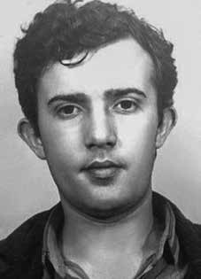

João
Roberto
Borges
de Souza
CIRCUNSTÂNCIAS DA MORTE
João Roberto Borges de Souza morreu no dia 10 de outubro de 1969, após ser sequestrado em Catolé do Rocha (PB).
Depois de ser preso pela quarta vez, João foi encaminhado ao DOPS de Recife (PE), sob a responsabilidade do Delegado Moacir Sales de Araújo, onde ficou preso por três meses. O Inquérito Policial Militar (IPM) indica a classificação do jovem como um elemento “engajado na prática de atos contrarrevolucionários e tendo como propósito permanente a subversão da ordem do país”.
Ao sair da prisão com claros indícios de tortura, João foi chamado a auxiliar os órgãos de repressão sob a ameaça de morte. O estudante não aceitou a proposta, sendo sequestrado no dia 7 de outubro de 1969 por agentes do Centro de Informações da Marinha (Cenimar) e do Comando de Caça aos Comunistas (CCC). Familiares e vizinhos assistiram a sua prisão. Em seguida, a família procurou saber de seu paradeiro, mas não obteve nenhuma informação. Três dias depois, sua morte foi noticiada pela rádio local tendo como causa “afogamento no açude Olho D’Água” no município de Catolé do Rocha (PB).
Segundo texto de seu companheiro de lutas, Eric Jenner Rosas, publicado no Jornal O Norte, em 24 de agosto de 1996, quando estava sendo procurado, João Roberto começara a trabalhar como representante de laboratório farmacêutico para sobreviver, viajando pelas cidades do interior da Paraíba. “Numa dessas viagens, não se sabe bem como aconteceu, ele apareceu morto. Afogado, diziam. Assassinado, dizemos”.
Por sua vez, em depoimento prestado à Comissão de Anistia em 24 de agosto de 2001, Eloísa Helena Borges de Souza, irmã da vítima, afirma que após a quarta prisão, onde João ficou por cerca de três meses, ele já não era a mesma pessoa, vivia com medo das torturas e de novas prisões. Deixou o trabalho no laboratório e foi se esconder na casa de um amigo em Natal e, posteriormente, com medo de prejudicar esse amigo, partiu para a cidade de Catolé do Rocha, permanecendo no sítio de um ex-colega de república.
Poucos dias depois, a família fora avisada de sua morte e se deslocou para aquela cidade, exigindo a verdade e o direito de enterrá-lo. Devido ao forte odor que exalava o corpo, os familiares nunca acreditaram que a causa da morte fosse por afogamento. O corpo de João tinha uma pancada na nuca, o olho roxo e o rosto deformado, além de ferimentos nas costas. Dentre seus pertences foi encontrada uma identidade falsa.
A hipótese levantada pela Comissão Estadual da Verdade da Paraíba (CEV-PB) é que antes de seu falecimento, João Roberto havia ido ao Rio Grande do Norte para obter documentos falsos e entrar na clandestinidade. Sua família teve muita dificuldade para enterrá-lo, as autoridades chegaram a informar que o sepultamento já havia ocorrido. O boletim da Anistia Internacional de 1974 afirma que o corpo de João foi jogado no açude, após ser torturado.
De acordo com Eric Rosas, a versão oficial, que afirma o afogamento como causa da morte, é improvável, pois João, enquanto jovem nascido em cidade portuária e acostumado a viver na beira da praia, sabia nadar bem. O enterro ocorreu no cemitério da cidade de Cabedelo (PB) e os pais de João não permitiram que fosse feita a autópsia.
João Roberto Borges de Souza died on October 10, 1969, after being kidnapped in Catolé do Rocha (PB).
After being arrested for the fourth time, João was sent to the DOPS in Recife (PE), under the responsibility of Delegate Moacir Sales de Araújo, where he was imprisoned for three months. The Military Police Inquiry (IPM) indicates the classification of the young man as an element “engaged in the practice of counter-revolutionary acts and whose permanent purpose is to subvert the country’s order”.
Upon leaving prison with clear signs of torture, João was called to assist law enforcement agencies under the threat of death. The student did not accept the proposal, being kidnapped on October 7, 1969 by agents from the Navy Information Center (Cenimar) and the Communist Hunting Command (CCC). Family and neighbors attended his arrest. The family then sought to find out his whereabouts, but did not obtain any information. Three days later, his death was reported on local radio with the cause being “drowning in the Olho D’Água reservoir” in the municipality of Catolé do Rocha (PB).
According to a text by his fellow fighter, Eric Jenner Rosas, published in Jornal O Norte, on August 24, 1996, when he was being sought, João Roberto had started working as a pharmaceutical laboratory representative to survive, traveling through the cities in the interior of Paraíba. "On one of those trips, we don't know exactly how it happened, he turned up dead. Drowned, they said. Murdered, we say."
In turn, in a statement given to the Amnesty Commission on August 24, 2001, Eloísa Helena Borges de Souza, the victim's sister, states that after the fourth arrest, where João remained for around three months, he was no longer the same person, he lived in fear of torture and new arrests. He left his work in the laboratory and went to hide at a friend's house in Natal and, later, afraid of harming this friend, he left for the city of Catolé do Rocha, staying at the farm of a former colleague from the republic.
A few days later, the family was notified of his death and traveled to that city, demanding the truth and the right to bury him. Due to the strong odor emanating from the body, family members never believed that the cause of death was drowning. João's body had a blow to the back of the head, a black eye and a deformed face, as well as injuries to his back. A fake ID was found among his belongings.
The hypothesis raised by the Paraíba State Truth Commission (CEV-PB) is that before his death, João Roberto had gone to Rio Grande do Norte to obtain false documents and go underground. His family had a lot of difficulty burying him, the authorities even reported that the burial had already taken place. The 1974 Amnesty International bulletin states that João's body was thrown into the dam after being tortured.
According to Eric Rosas, the official version, which states drowning as the cause of death, is unlikely, as João, as a young man born in a port city and used to living on the beach, knew how to swim well. The burial took place in the cemetery in the city of Cabedelo (PB) and João's parents did not allow the autopsy to be carried out.
João Roberto Borges de Souza murió el 10 de octubre de 1969, tras ser secuestrado en Catolé do Rocha (PB).
Después de ser detenido por cuarta vez, João fue enviado al DOPS de Recife (PE), bajo la responsabilidad del delegado Moacir Sales de Araújo, donde permaneció detenido durante tres meses. El Equipo de Investigación de la Policía Militar (IPM) señala la calificación del joven como un elemento “dedicado a la práctica de actos contrarrevolucionarios y cuyo fin permanente es subvertir el orden del país”.
Al salir de prisión con claros signos de tortura, João fue llamado para ayudar a las fuerzas del orden bajo amenaza de muerte. El estudiante no aceptó la propuesta, siendo secuestrado el 7 de octubre de 1969 por agentes del Centro de Información de la Armada (Cenimar) y del Comando Comunista de Caza (CCC). Familiares y vecinos asistieron a su detención. La familia intentó entonces averiguar su paradero, pero no obtuvo ninguna información. Tres días después, su muerte fue informada por la radio local, siendo la causa “ahogamiento en el embalse de Olho D’Água”, en el municipio de Catolé do Rocha (PB).
Según un texto de su compañero de lucha, Eric Jenner Rosas, publicado en el Jornal O Norte, el 24 de agosto de 1996, cuando era buscado, João Roberto había comenzado a trabajar como representante de un laboratorio farmacéutico para sobrevivir, viajando por las ciudades del interior de Paraíba. "En uno de esos viajes, no sabemos exactamente cómo pasó, apareció muerto. Ahogado, dijeron. Asesinado, decimos".
A su vez, en declaración prestada ante la Comisión de Amnistía el 24 de agosto de 2001, Eloísa Helena Borges de Souza, hermana de la víctima, afirma que después de la cuarta detención, donde João permaneció alrededor de tres meses, ya no era la misma persona, vivía con miedo a ser torturado y a nuevas detenciones. Dejó su trabajo en el laboratorio y se escondió en casa de un amigo en Natal y, más tarde, temiendo hacer daño a este amigo, partió para la ciudad de Catolé do Rocha, alojándose en la finca de un ex colega de la república.
Unos días después, la familia fue notificada de su muerte y viajó a esa ciudad, exigiendo la verdad y el derecho a darle sepultura. Debido al fuerte olor que emanaba del cuerpo, los familiares nunca creyeron que la causa de la muerte fuera ahogamiento. El cuerpo de João presentaba un golpe en la nuca, un ojo morado y el rostro deformado, además de heridas en la espalda. Entre sus pertenencias se encontró una identificación falsa.
La hipótesis planteada por la Comisión de la Verdad del Estado de Paraíba (CEV-PB) es que antes de su muerte, João Roberto había ido a Rio Grande do Norte para obtener documentos falsos y pasar a la clandestinidad. Su familia tuvo muchas dificultades para enterrarlo, incluso las autoridades informaron que el entierro ya se había realizado. El boletín de Amnistía Internacional de 1974 afirma que el cuerpo de João fue arrojado a la presa después de haber sido torturado.
Según Eric Rosas, la versión oficial, que señala como causa de la muerte el ahogamiento, es poco probable, ya que João, siendo un joven nacido en una ciudad portuaria y acostumbrado a vivir en la playa, sabía nadar bien. El entierro tuvo lugar en el cementerio de la ciudad de Cabedelo (PB) y los padres de João no permitieron que se realizara la autopsia.